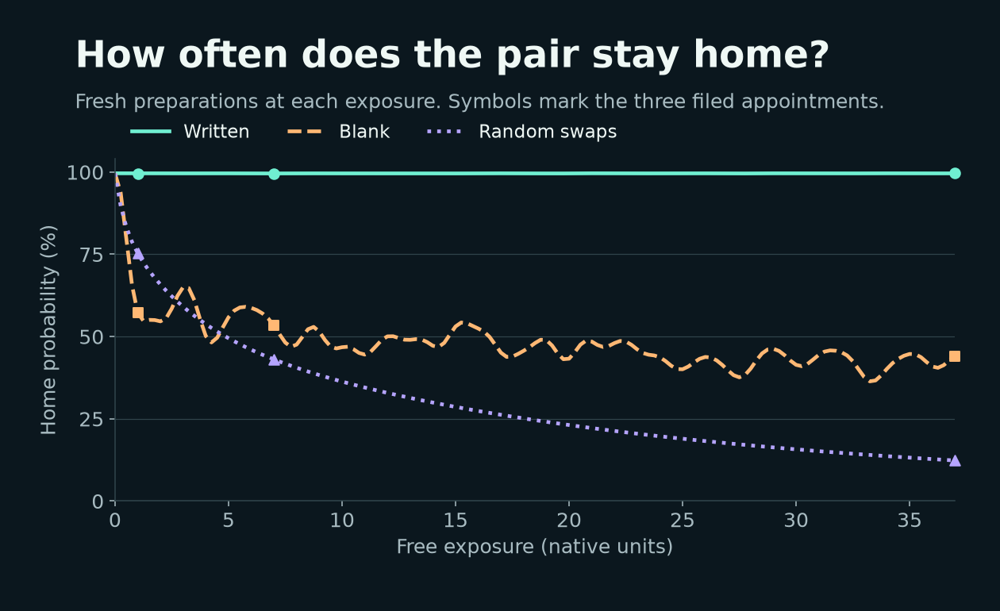

The stability of a prepared pair
When cell 13 reads its 30 seams after release, how often does it find both loads at home? Watch the same pair evolve with the eleven seam memories written or cleared.
- Written seams · at 37
- 99.59%
- Blank seams · at 37
- 44.09%
- Random swaps · at 37
- 12.32%
What keeps the pair home?
The observer puts two loads into cell 13, writes eleven seam memories and leaves two exits open. After release, the board evolves freely. Two ways for the pair to leave have opposite amplitudes. They cancel for part of the prepared state. Counting every preparation, that protected part guarantees at least 99.477% home detection at any exposure and any real contrast strength.
At the comparison strength κ = ½, keeping the acquired two-load state and clearing the memories reduces the home probability to 44.09% by exposure 37. Replacing coherent exchange with random swaps on the written board reduces it to 12.32%.

What is under review?
OpenWave PR #749 asks whether the pair and its eleven persistent memories together qualify as a localized excitation. The memories are deliberately prepared and keep influencing the flight. Whether they count as part of the excitation or as an external trap is the question before reviewers. The experiment measures persistence. Charge, spin and particle identity require separate measurements.
OpenWave review · Pinned Interval Echo source · Filed receipt · Plotted probabilities (JSON) · Figure renderer (Python)